← Back to Projects
UNREAL ENGINE 5 • CINEMATIC
Retro Diner
A solo cinematic trailer developed in Unreal Engine 5,
combining character creation, animation, motion capture,
environment development, lighting, VFX and cinematic direction.
PROJECT TYPE
Freelance Cinematic Trailer
ROLE
Solo Unreal Engine Cinematic Developer

01 — OVERVIEW
Building a cinematic world
from start to finish.
The Retro Diner project was a freelance cinematic trailer
developed in Unreal Engine 5.
I was responsible for the cinematic production from character
development and animation through environment assembly,
lighting, camera work, visual effects, sound, rendering
and final editing.
The project combined MetaHuman character workflows,
motion capture, facial animation, Blueprint systems,
Sequencer cinematography and real-time rendering
to create a stylized retro diner sequence.
02 — MY ROLE
Solo cinematic development.
I handled the production of the trailer independently,
coordinating the character, animation, environment,
cinematic and post-production workflows inside
Unreal Engine 5.
MetaHuman Development
3D Facial Scanning
Character Animation
Facial Animation
Lip Sync
Motion Capture
Environment Assembly
Material Modification
Lighting
Camera Composition
Sequencer
Weather Effects
Particle VFX
Blueprints
Sound Design
Rendering
Final Editing
03 — CHARACTER DEVELOPMENT
Bringing characters into the scene.
MetaHuman was used as part of the character-development
workflow for the cinematic.
For one of the principal characters, I worked from a
real-world model and created a 3D scan of her face to help
build the digital character.
The characters were then integrated into the diner environment
and prepared for animation, facial performance and
cinematic sequencing.
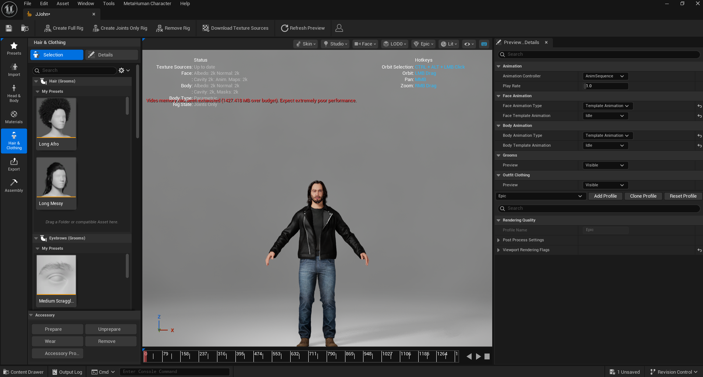
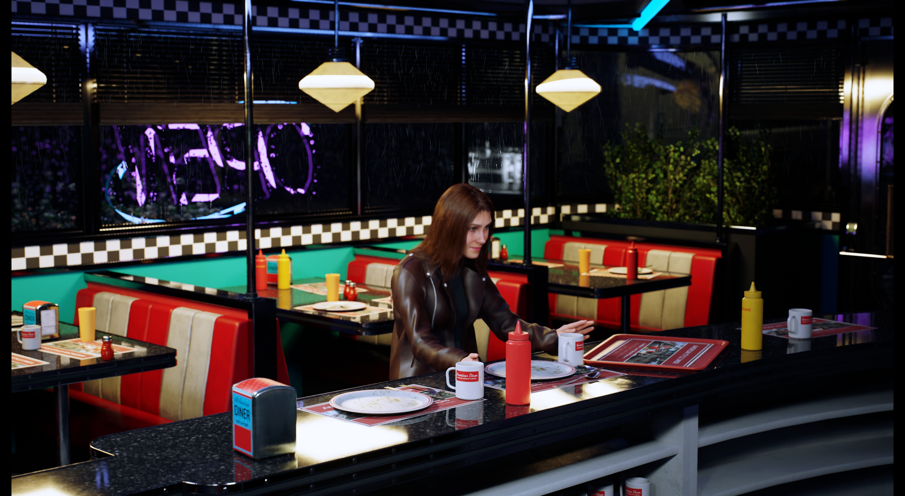
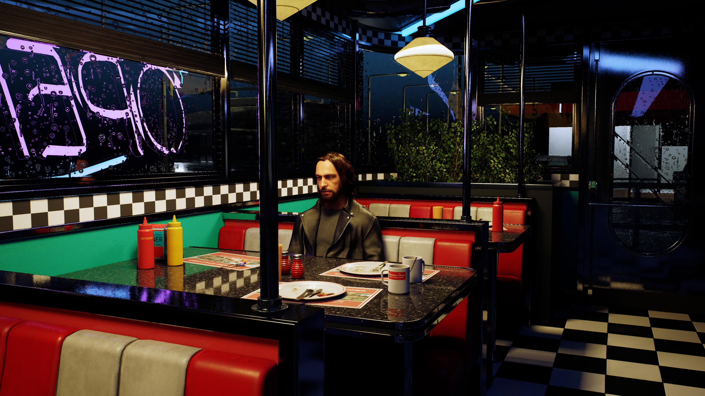
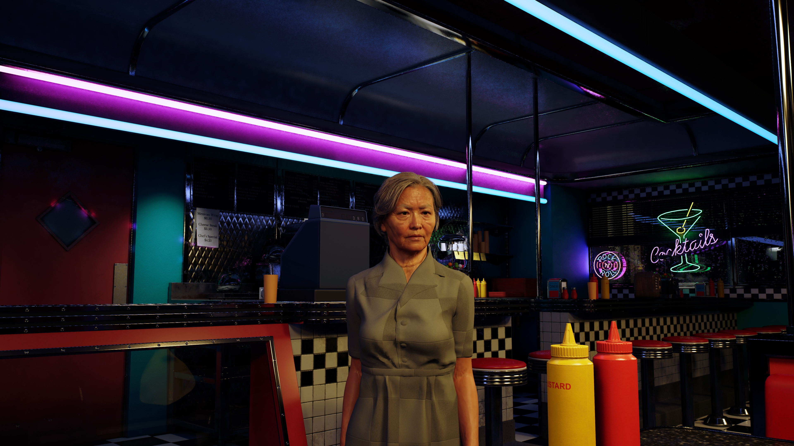
04 — ANIMATION
Performance through movement.
Character performances combined motion-capture data
with additional animation work inside Unreal Engine.
I handled character movement, facial animation and lip
synchronization, refining the performances so that they
worked with the timing and framing of the cinematic.
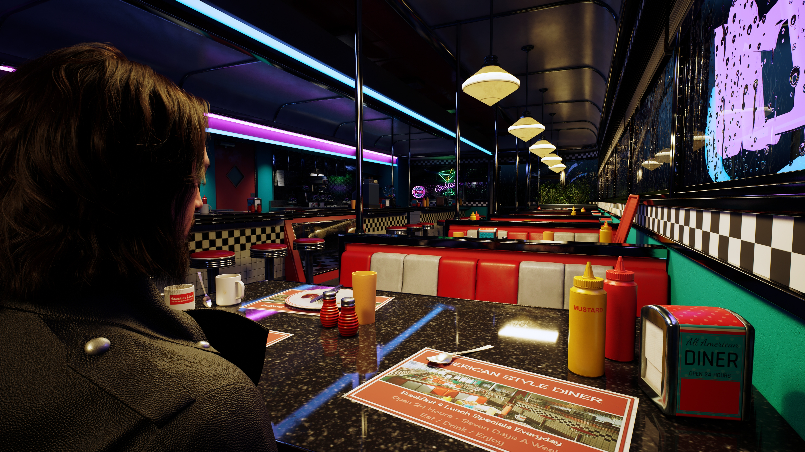
05 — ENVIRONMENT
Constructing the diner.
I assembled the diner environment in Unreal Engine,
developing the layout and visual composition of the space
for the cinematic.
The environment was populated with diner furniture,
counters, booths, signage, props and characters while
materials were modified and refined to support the
intended visual direction.
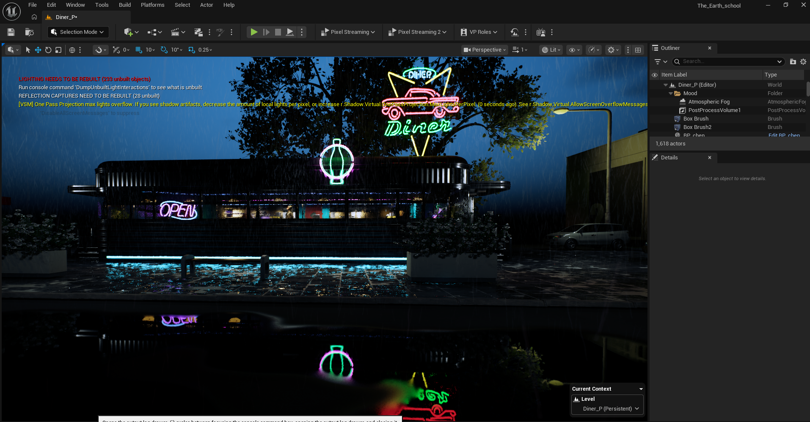
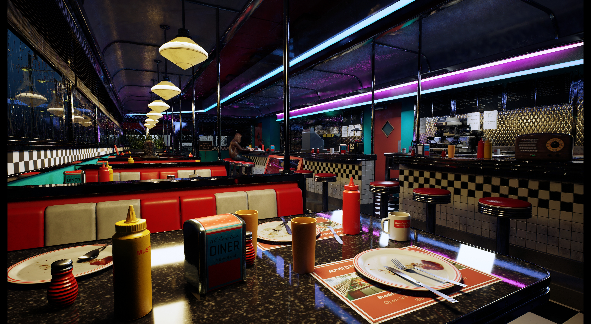
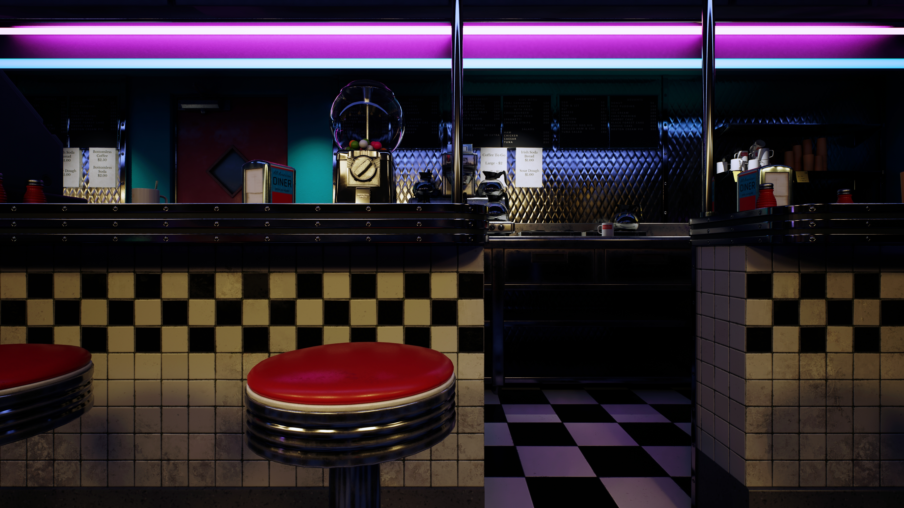
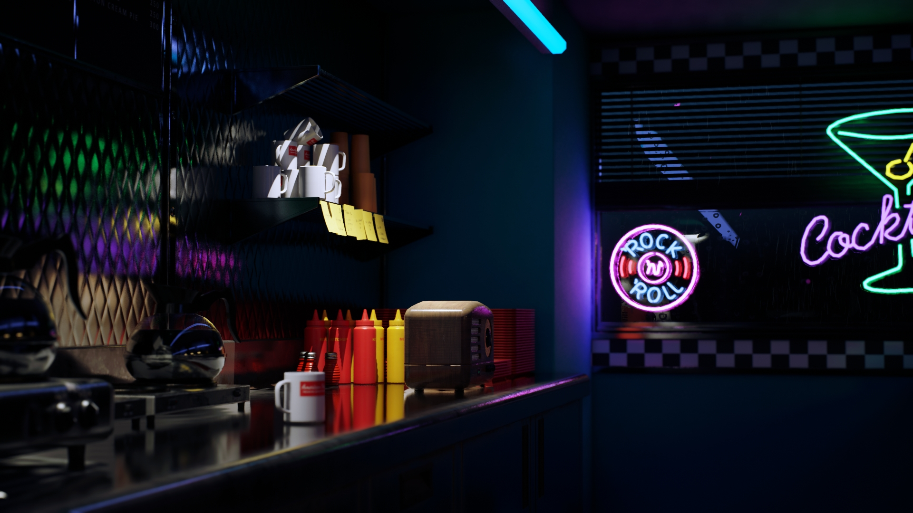
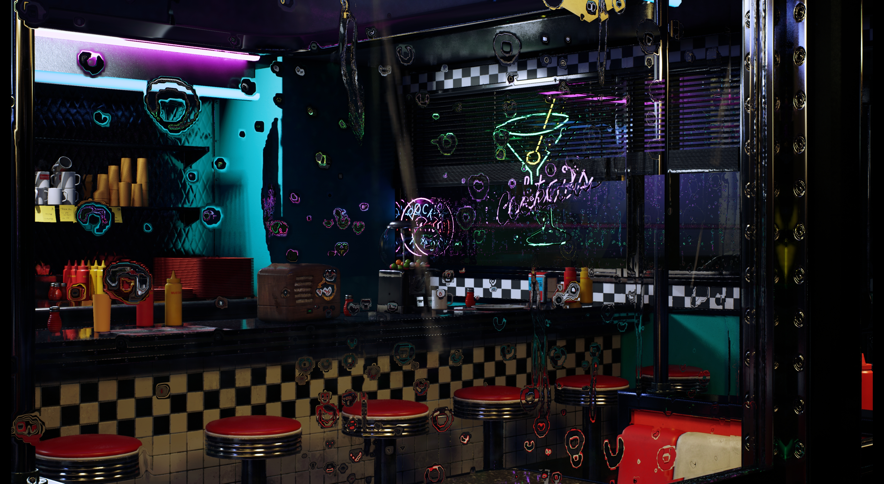
06 — LIGHTING & VFX
Neon, rain and atmosphere.
Lighting played a major role in establishing the visual
identity of the cinematic.
I balanced the warm practical lighting of the diner against
cyan, purple and pink neon sources to create separation
between the interior and the darker exterior.
Rain, wet surfaces and particle effects were incorporated
to strengthen the atmosphere and create reflections across
the environment.
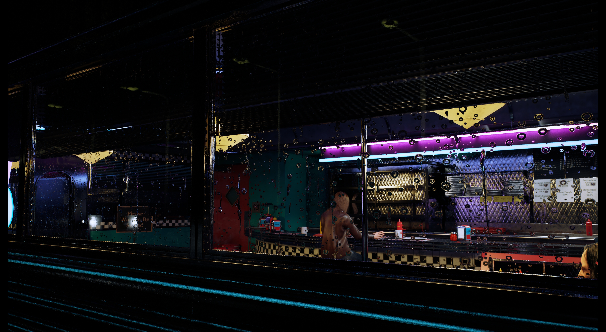
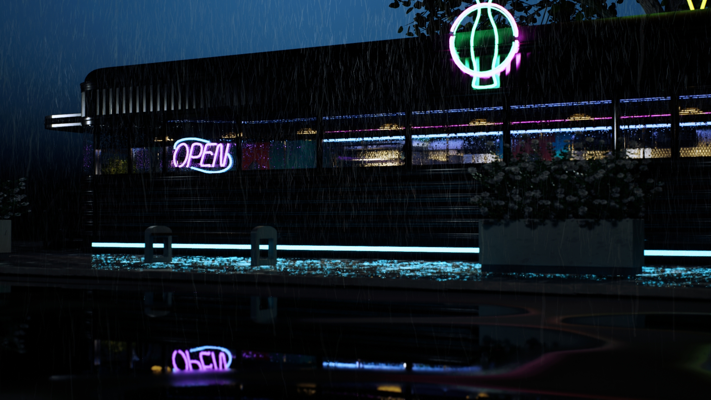
07 — CINEMATOGRAPHY
Directing the camera.
Unreal Engine's Sequencer was used to build the cinematic
timeline, organize individual shots and manage camera cuts
throughout the trailer.
I handled camera placement, framing, shot timing,
transitions and sequencing while coordinating animation,
audio and lighting across the final cinematic.
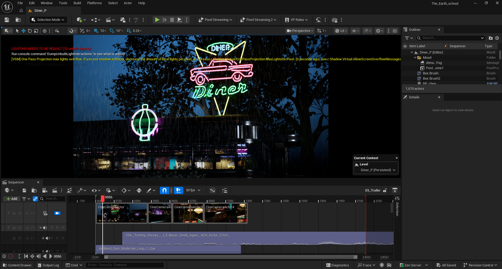
08 — TECHNICAL
Supporting the cinematic
with Unreal systems.
Blueprints were used as part of the Unreal Engine workflow
to support the systems required by the cinematic.
The project required coordination between character
systems, animation, Sequencer, lighting, visual effects
and environmental elements while maintaining the
intended cinematic presentation.
09 — POST-PRODUCTION
From Unreal Engine
to the final trailer.
After the cinematic sequence was assembled,
I handled rendering, sound design and the final
trailer edit.
This allowed the visual direction, pacing, audio and
character performances to be developed as parts of
a single cinematic experience.
10 — CHALLENGES & SOLUTIONS
Solving problems as the project grew.
Working independently meant that technical and creative
problems could not simply be passed to another department.
As the project developed, I had to troubleshoot unfamiliar
systems, learn new workflows and adapt the production when
technical limitations appeared.
01
Working within memory limitations
As the project grew, the combination of MetaHuman
characters, environment assets, lighting and visual
effects increased the memory requirements of the
Unreal Engine project.
The available system memory eventually became a
bottleneck during development. After identifying
RAM capacity as part of the limitation, I upgraded
the system memory to provide enough headroom to
continue working with the complete cinematic
environment.
02
Achieving the MetaHuman likeness
One of the principal characters was based on a
real-world model, which meant creating a convincing
digital human was only part of the challenge.
The character also needed to resemble a specific person.
I used a 3D facial scan as part of the MetaHuman
workflow and iterated on the character until the
facial structure and overall appearance were closer
to the intended likeness.
03
Facial performance with Live Link
Setting up the facial-performance workflow
introduced additional technical challenges,
particularly when connecting Live Link with the
character's facial rig.
I worked through the setup and rigging issues until
I could bring facial-performance data into the
character workflow and use it as part of the
cinematic performance.
04
Learning character animation from scratch
Character animation was not a workflow I already
had mastered when I began the project. The trailer
required character performances, however, so
animation became something I needed to learn
during production.
I learned the fundamentals of working with character
animation and motion-capture data, then applied
those skills directly to the project. I refined
movement and performance inside Unreal Engine to
better match the timing, camera work and needs
of each shot.
11 — FINAL GALLERY
Selected frames.